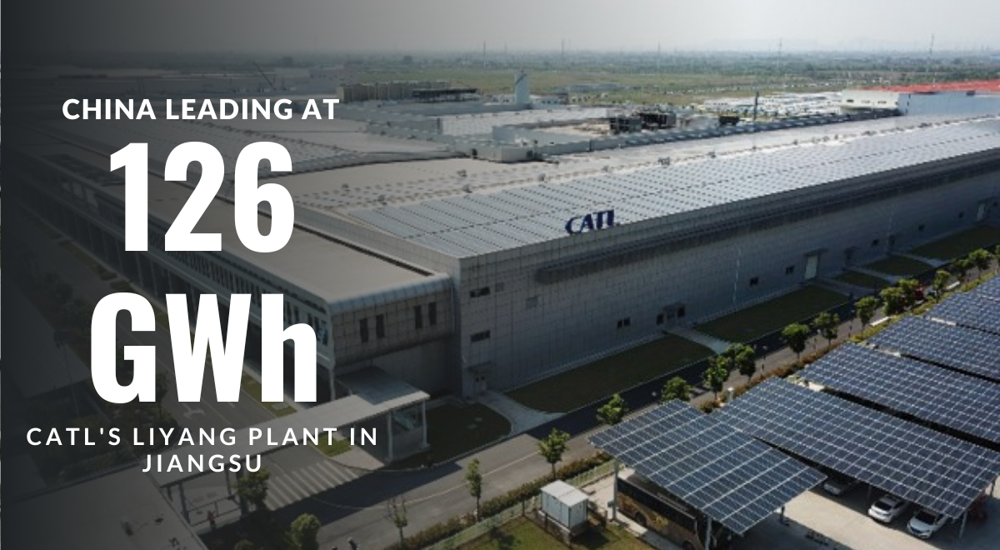
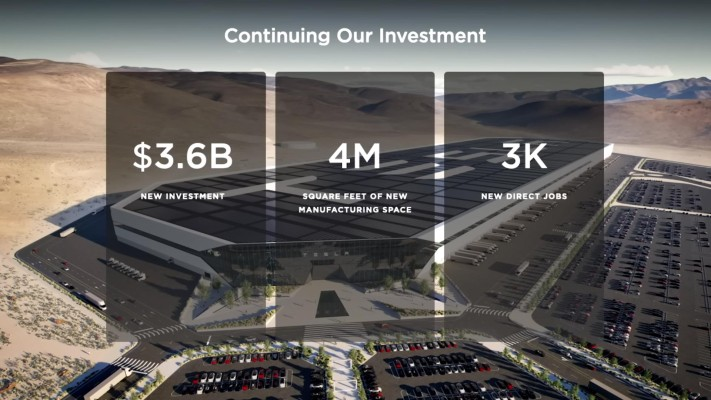
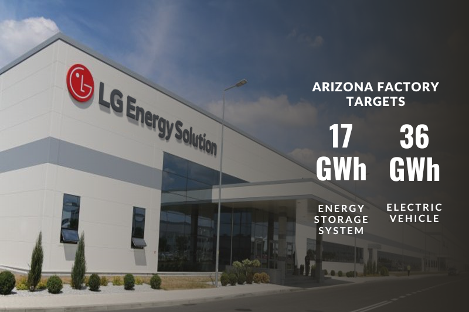
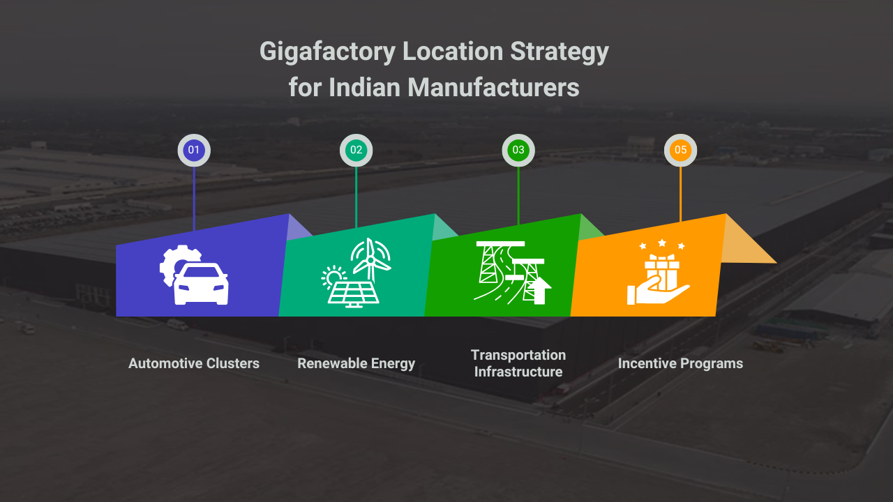
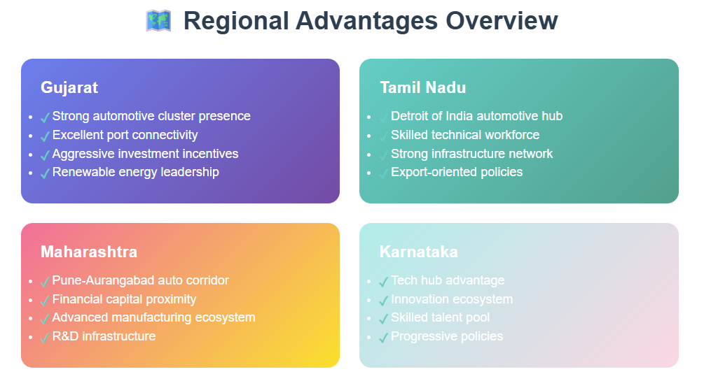
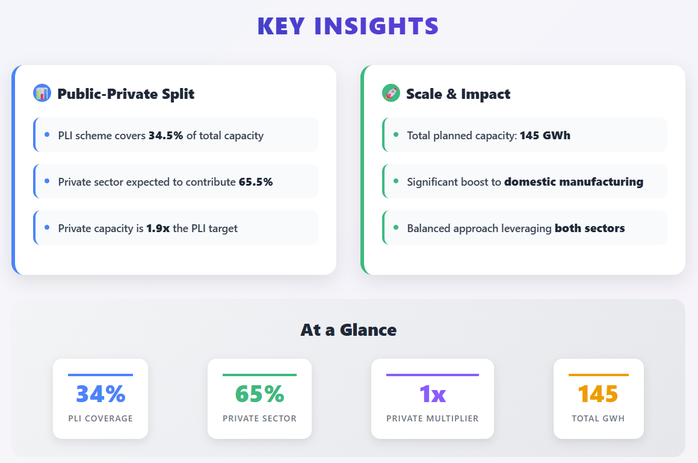
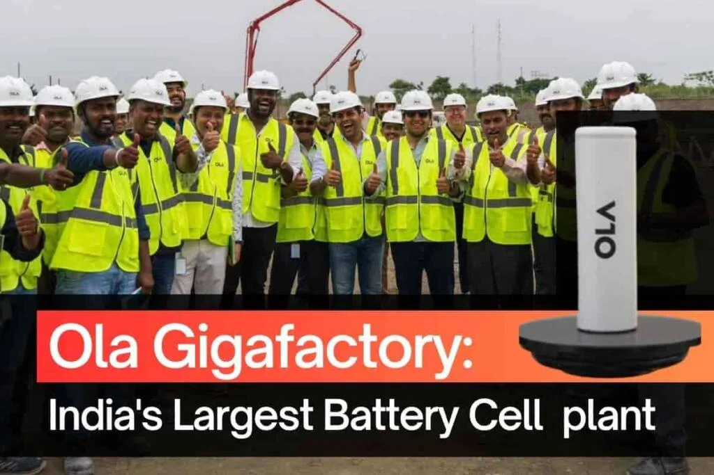
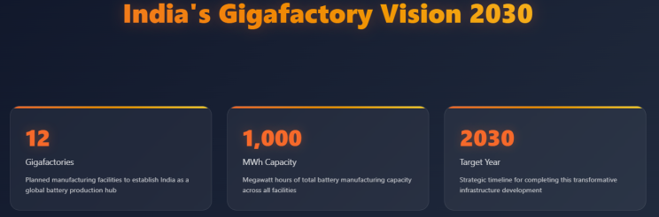
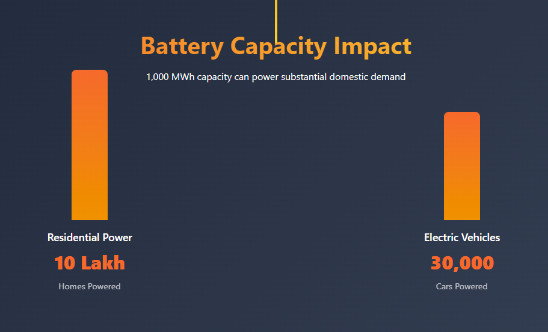

India's battery manufacturing sector stands at a pivotal juncture as the country advances its ambitious plans to establish domestic production capabilities for electric vehicle and energy storage applications. With global gigafactories demonstrating remarkable achievements in scale, efficiency, and technological innovation, Indian manufacturers have valuable opportunities to learn from international best practices.
The global battery manufacturing landscape is dominated by companies like CATL , which holds 37% market share, followed by LG Energy Solution with 14% and Panasonic with 6%. As India moves forward with its Production Linked Incentive scheme and plans for 12 gigafactories by 2030, understanding the operational excellence and strategic approaches of established global players becomes crucial for building a competitive domestic battery manufacturing ecosystem.
Global Gigafactory Landscape and Success Factors
Scale and Production Capacity Leadership
The global battery manufacturing landscape demonstrates the critical importance of achieving massive scale to remain competitive. The world's largest battery gigafactories showcase impressive production capacities, with CATL's Liyang Plant in Jiangsu, China leading at 126 GWh, followed by CATL's Ningde Plant at 120 GWh and the Yibin Plant at 100 GWh. Tesla 's Gigafactory Nevada, representing the largest facility in the United States, operates at 100 GWh capacity and serves as one of the world's highest volume plants for electric motors, energy storage products, vehicle powertrains and batteries, producing billions of cells per year.

These mega-scale operations demonstrate how achieving substantial production volumes enables manufacturers to optimize costs through economies of scale while meeting the rapidly growing global demand for battery systems. The scale advantage becomes particularly evident when considering that large gigafactories can consume 2.4 GWh of electricity and 1 million gallons of water daily, indicating the massive infrastructure and resource management capabilities required for successful operations. For Indian manufacturers, understanding this scale imperative suggests that initial investments must be sufficiently large to achieve competitive unit economics and market relevance.

Advanced Manufacturing Systems and Automation
Leading global gigafactories have invested heavily in sophisticated manufacturing systems that integrate artificial intelligence, machine learning, and advanced automation technologies. CATL exemplifies this approach through its industry-leading intelligent manufacturing system that employs AI, image recognition, machine learning, predictive algorithms, and 5G connectivity. The company has achieved remarkable production efficiency metrics, including a single-line production rate of one cell per second and one module every 20 seconds, demonstrating the potential for highly optimized manufacturing processes.
The interconnection network at CATL covers 95% of production equipment with more than 7,000 quality control points monitored in real-time, ensuring consistent quality standards throughout the manufacturing process. This level of technological integration extends to comprehensive data management, with the company establishing five data platforms for research and development, testing, manufacturing, operation, and after-sales support, backed by over 100 billion big data assets. Such sophisticated systems enable predictive maintenance, quality optimization, and continuous process improvement that are essential for maintaining competitive manufacturing operations.
Key Lessons for Indian Battery Manufacturers
Technology Integration and Smart Manufacturing Excellence
Indian battery manufacturers can learn significantly from the technology integration strategies employed by global leaders like CATL and Tesla. The implementation of comprehensive data platforms that span the entire value chain from research and development to after-sales service represents a crucial capability for modern battery manufacturing. Indian companies should prioritize investments in artificial intelligence and machine learning systems that can optimize production processes, predict equipment maintenance needs, and ensure consistent quality standards across high-volume manufacturing operations.
Strategic Location and Market Focus
Global gigafactories demonstrate the importance of strategic location decisions that optimize supply chain access, market proximity, and operational costs. LG Energy Solution 's decision to establish its Arizona gigafactory specifically targets the energy storage system market, with 17 GWh of dedicated ESS production capacity alongside 36 GWh for electric vehicle applications. The company's executive noted that Arizona provides an ideal location due to abundant solar energy resources, highlighting how manufacturers can align facility locations with regional energy characteristics and market demands.

Similarly, Panasonic 's $4 billion investment in Kansas for electric vehicle battery production demonstrates how manufacturers select locations that provide access to key automotive markets while benefiting from supportive government policies. Indian manufacturers should consider similar strategic approaches when selecting locations for gigafactories, evaluating factors such as proximity to automotive clusters, renewable energy availability, transportation infrastructure, and state-level incentive programs that can enhance operational efficiency and market access.

Investment Scale and Financial Commitment
The financial scale of successful global gigafactory projects provides important benchmarks for Indian manufacturers planning similar facilities. Panasonic's $4 billion investment in Kansas represents one of the largest economic development projects in that state's history, indicating the substantial capital requirements for establishing competitive battery manufacturing capabilities. When operational at full capacity, this facility will produce 66 lithium-ion batteries per second, demonstrating the production volumes necessary to justify such significant investments.
Tesla's continued expansion of Gigafactory Nevada, including plans for a 100 GWh 4680 cell factory and the first high-volume Semi factory, illustrates how successful facilities require ongoing investment and expansion to maintain competitiveness. Indian manufacturers should recognize that initial gigafactory investments represent long-term commitments requiring sustained capital allocation for technology upgrades, capacity expansions, and process optimization over multiple years of operation.

India's Current Progress and Strategic Opportunities
Production Linked Incentive Scheme Implementation
India's Production Linked Incentive scheme for Advanced Chemistry Cell battery storage represents a significant step toward building domestic manufacturing capabilities, with three major companies - Reliance Energy , Ola Electric , and Rajesh Exports Ltd - signing program agreements under the ₹18,100 crore initiative. The scheme targets manufacturing capacity of 50 GWh while private players are expected to create additional capacity reaching approximately 95 GWh, bringing total planned capacity to 145 GWh.
The PLI program requires manufacturing facilities to be established within two years, with incentives disbursed over five years based on sales of batteries manufactured in India. This timeline creates urgency for Indian manufacturers to rapidly scale up operations while ensuring quality standards meet international benchmarks. The program's structure encourages both domestic consumption and export potential, positioning India to potentially become a significant player in the global battery supply chain.

Emerging Domestic Manufacturing Capabilities
Indian battery manufacturers are making tangible progress toward operational gigafactory facilities, with Ola Electric announcing that its gigafactory in Krishnagiri district, Tamil Nadu, became operational in February 2024, producing the country's first lithium-ion battery cells. Reliance Industries is simultaneously developing a gigafactory for batteries at the Dhirubhai Ambani Green Energy Giga Complex in Jamnagar, Gujarat, representing another major domestic manufacturing initiative.

These early implementations provide valuable learning opportunities for the broader Indian battery manufacturing sector. The operational experience gained from these initial facilities will inform best practices for subsequent gigafactory developments and help establish supply chain relationships with domestic and international partners. Indian manufacturers should closely monitor the performance metrics, operational challenges, and market reception of these pioneering facilities to inform their own strategic planning and investment decisions.
Long-term Capacity Planning and Market Positioning
India's ambitious plan to establish 12 gigafactories by 2030 reflects the scale of investment and manufacturing capacity required to support the country's electric vehicle transition and renewable energy goals. The targeted 1,000 megawatt hour of battery capacity would be sufficient to power 10 lakh homes or approximately 30,000 electric cars, indicating the substantial domestic market opportunity for battery manufacturers.

The government's willingness to invest approximately $4 billion in Tesla-style gigafactories demonstrates strong policy support for domestic battery manufacturing development. However, Indian manufacturers must balance domestic market development with global competitiveness, ensuring that locally produced batteries meet international quality standards and cost benchmarks. The success of India's battery manufacturing ambitions will depend on manufacturers' ability to achieve production efficiencies comparable to global leaders while leveraging India's advantages in engineering talent, manufacturing capabilities, and growing domestic market demand.

Conclusion and Strategic Recommendations
Indian battery manufacturers stand at a critical opportunity to build world-class gigafactory capabilities by learning from global best practices while leveraging domestic advantages and government support. Indian companies should prioritize developing comprehensive data platforms, implementing AI-driven quality control systems, and establishing production efficiencies that match global benchmarks of one cell per second and one module every 20 seconds.
The strategic approach should emphasize building facilities that serve both domestic demand and export markets, taking advantage of India's Production Linked Incentive scheme while ensuring long-term competitiveness in the global marketplace. As India progresses toward its goal of 12 gigafactories by 2030, manufacturers must focus on operational excellence, strategic location selection, and sustained investment in technology and process optimization.